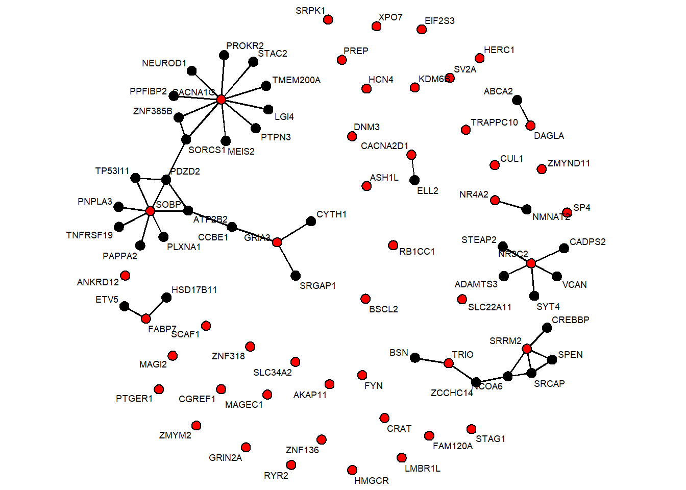
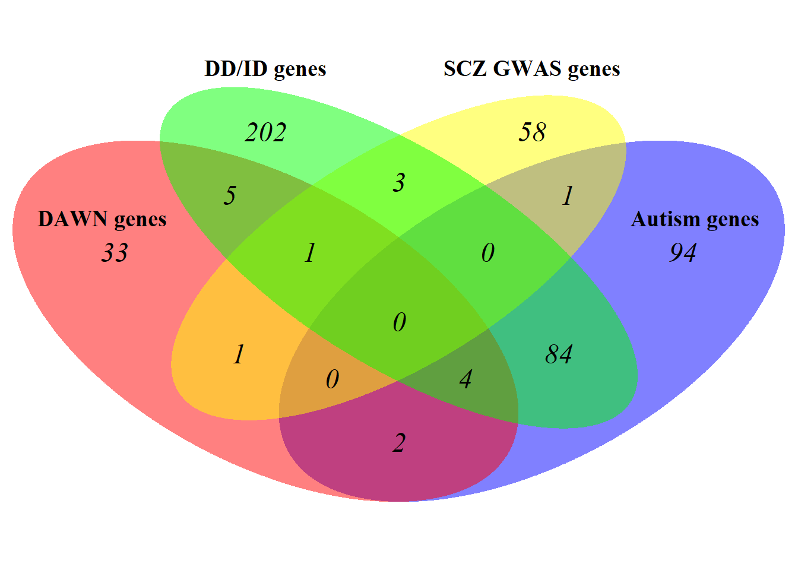
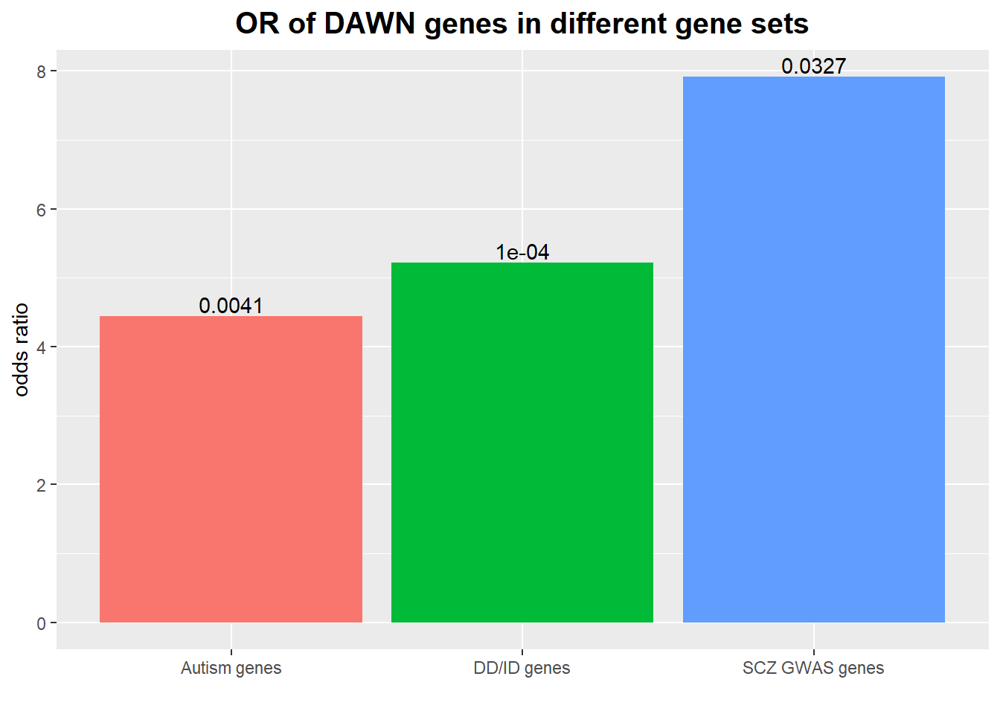
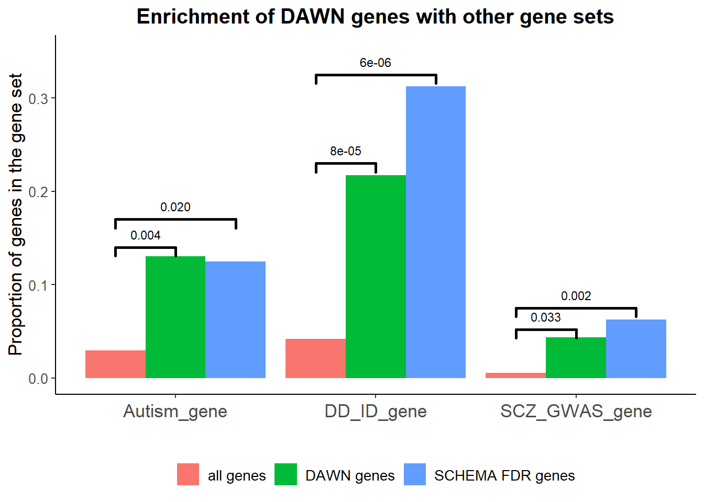
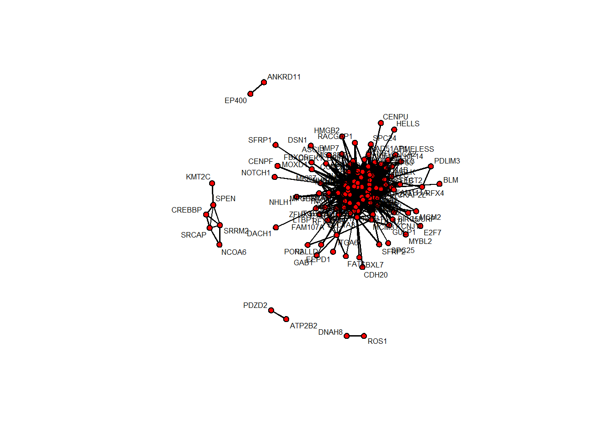

use PFC35 data
2024-01-29
Last updated: 2024-04-24
Checks: 4 3
Knit directory: multi_omics/
This reproducible R Markdown analysis was created with workflowr (version 1.7.1). The Checks tab describes the reproducibility checks that were applied when the results were created. The Past versions tab lists the development history.
The R Markdown file has unstaged changes. To know which version of
the R Markdown file created these results, you’ll want to first commit
it to the Git repo. If you’re still working on the analysis, you can
ignore this warning. When you’re finished, you can run
wflow_publish to commit the R Markdown file and build the
HTML.
Great job! The global environment was empty. Objects defined in the global environment can affect the analysis in your R Markdown file in unknown ways. For reproduciblity it’s best to always run the code in an empty environment.
The command set.seed(20240123) was run prior to running
the code in the R Markdown file. Setting a seed ensures that any results
that rely on randomness, e.g. subsampling or permutations, are
reproducible.
Great job! Recording the operating system, R version, and package versions is critical for reproducibility.
- session-info-chunk-inserted-by-workflowr
- unnamed-chunk-10
- unnamed-chunk-11
- unnamed-chunk-12
- unnamed-chunk-13
- unnamed-chunk-14
- unnamed-chunk-15
- unnamed-chunk-16
- unnamed-chunk-17
- unnamed-chunk-18
- unnamed-chunk-19
- unnamed-chunk-2
- unnamed-chunk-20
- unnamed-chunk-21
- unnamed-chunk-22
- unnamed-chunk-23
- unnamed-chunk-24
- unnamed-chunk-25
- unnamed-chunk-26
- unnamed-chunk-3
- unnamed-chunk-4
- unnamed-chunk-5
- unnamed-chunk-6
- unnamed-chunk-7
- unnamed-chunk-8
- unnamed-chunk-9
To ensure reproducibility of the results, delete the cache directory
SCZ_gene_list_cache and re-run the analysis. To have
workflowr automatically delete the cache directory prior to building the
file, set delete_cache = TRUE when running
wflow_build() or wflow_publish().
Using absolute paths to the files within your workflowr project makes it difficult for you and others to run your code on a different machine. Change the absolute path(s) below to the suggested relative path(s) to make your code more reproducible.
| absolute | relative |
|---|---|
| C:/han/Projects/Multi_Omics/multi_omics/data/dat_pfc35_20240328.RData | data/dat_pfc35_20240328.RData |
| C:/han/Projects/Multi_Omics/multi_omics/data/gene_pfc35_20240416.RData | data/gene_pfc35_20240416.RData |
Great! You are using Git for version control. Tracking code development and connecting the code version to the results is critical for reproducibility.
The results in this page were generated with repository version 00cf677. See the Past versions tab to see a history of the changes made to the R Markdown and HTML files.
Note that you need to be careful to ensure that all relevant files for
the analysis have been committed to Git prior to generating the results
(you can use wflow_publish or
wflow_git_commit). workflowr only checks the R Markdown
file, but you know if there are other scripts or data files that it
depends on. Below is the status of the Git repository when the results
were generated:
Ignored files:
Ignored: .Rhistory
Ignored: analysis/.Rhistory
Ignored: analysis/SCZ_gene_list_cache/
Unstaged changes:
Modified: analysis/SCZ_gene_list.Rmd
Note that any generated files, e.g. HTML, png, CSS, etc., are not included in this status report because it is ok for generated content to have uncommitted changes.
These are the previous versions of the repository in which changes were
made to the R Markdown (analysis/SCZ_gene_list.Rmd) and
HTML (docs/SCZ_gene_list.html) files. If you’ve configured
a remote Git repository (see ?wflow_git_remote), click on
the hyperlinks in the table below to view the files as they were in that
past version.
| File | Version | Author | Date | Message |
|---|---|---|---|---|
| Rmd | 00cf677 | han | 2024-04-24 | 4/24/2024 |
| html | 00cf677 | han | 2024-04-24 | 4/24/2024 |
| Rmd | 2e01b01 | han | 2024-04-23 | 4/23/2024 |
| html | 2e01b01 | han | 2024-04-23 | 4/23/2024 |
| Rmd | 2bf651c | han | 2024-04-22 | 4/22/2024 |
| Rmd | f623998 | han | 2024-04-18 | 4/18/2024 |
| html | f623998 | han | 2024-04-18 | 4/18/2024 |
| Rmd | f3345b8 | han | 2024-04-17 | 4/17/2024 |
| html | f3345b8 | han | 2024-04-17 | 4/17/2024 |
| Rmd | 9c8759c | han | 2024-04-17 | 4/17/2024 |
| html | 9c8759c | han | 2024-04-17 | 4/17/2024 |
| Rmd | 3d0a1c0 | han | 2024-04-17 | 4/17/2024 |
| html | 3d0a1c0 | han | 2024-04-17 | 4/17/2024 |
| Rmd | 5d4ed8d | han | 2024-04-16 | 4/16/2024 |
| html | 5d4ed8d | han | 2024-04-16 | 4/16/2024 |
| Rmd | 4e7b846 | han | 2024-04-16 | 4/16/2024 |
| html | 4e7b846 | han | 2024-04-16 | 4/16/2024 |
| Rmd | 63a4211 | han | 2024-04-15 | 4/15/2024 |
| Rmd | d09d79f | han | 2024-04-09 | 4/9/2024 |
| Rmd | 5c384e4 | han | 2024-04-03 | 4/3/2024 |
| html | 5c384e4 | han | 2024-04-03 | 4/3/2024 |
| Rmd | 760f90d | han | 2024-04-02 | 4/2/2024 |
| html | 760f90d | han | 2024-04-02 | 4/2/2024 |
| Rmd | 8f9b043 | han | 2024-03-28 | 3/28/2024 |
| html | 8f9b043 | han | 2024-03-28 | 3/28/2024 |
| Rmd | 5e8ee9f | han | 2024-03-28 | 3/28/2024 |
| html | 5e8ee9f | han | 2024-03-28 | 3/28/2024 |
| Rmd | 89567d8 | han | 2024-03-28 | 3/28/2024 |
| html | 89567d8 | han | 2024-03-28 | 3/28/2024 |
| Rmd | 9ce069d | han | 2024-03-27 | 3/27/2024 |
| html | 9ce069d | han | 2024-03-27 | 3/27/2024 |
| Rmd | a82336a | han | 2024-03-19 | 3/19/2024 |
| Rmd | 493363a | han | 2024-03-15 | 3/15/2024 |
| Rmd | a4bf87e | han | 2024-03-14 | 3/14/2024 |
| Rmd | 6774a7a | han | 2024-03-13 | 3/13/2024 |
| Rmd | 531f0b1 | han | 2024-03-12 | 3/12/2024 |
| Rmd | 6286a7c | han | 2024-03-11 | 3/11/2024 |
| Rmd | 7dbfba8 | han | 2024-03-06 | 3/6/2024 |
| Rmd | a15ce3d | han | 2024-03-05 | 3/5/2024 |
| html | a15ce3d | han | 2024-03-05 | 3/5/2024 |
| Rmd | 0c2137d | han | 2024-02-19 | 2/19/2024 |
| Rmd | ec67a2b | han | 2024-02-14 | 2/14/2024 |
| Rmd | faa4925 | han | 2024-02-13 | 2/13/2024 |
| Rmd | 4227b4d | han | 2024-02-09 | 2/9/2024 |
| Rmd | 7881c5f | han | 2024-02-08 | 2/8/2024 |
| Rmd | 7c43f3b | han | 2024-02-07 | 2/7/2024 |
| Rmd | 108a213 | han | 2024-02-06 | 2/6/2024 |
| Rmd | 66ba626 | han | 2024-01-30 | 1/30/2024 |
| Rmd | dcc9ddd | han | 2024-01-30 | 1/30/2024 |
| Rmd | a5cd71e | han | 2024-01-29 | 1/29/2024 |
| Rmd | 2f79c1b | han | 2024-01-29 | 1/29/2024 |
| html | 2f79c1b | han | 2024-01-29 | 1/29/2024 |
Enrichment of risk genes
overlap with SCHEMA risk genes

(polygon[GRID.polygon.11], polygon[GRID.polygon.12], polygon[GRID.polygon.13], polygon[GRID.polygon.14], polygon[GRID.polygon.15], polygon[GRID.polygon.16], text[GRID.text.17], text[GRID.text.18], text[GRID.text.19], text[GRID.text.20], text[GRID.text.21], text[GRID.text.22], text[GRID.text.23], text[GRID.text.24]) 4 SCHEMA FDR genes are missed by DAWN is because these 4 genes don’t have expression data in brain span.
18 new genes are found
- these new 18 genes have small p values in SCHEMA, but not reach FDR<5% threshold.
candidate risk genes and their neighbors in network

genes in red are candidate risk genes at FDR less than 5%
genes in black are their direct neighbors
enrichment with other gene sets




GO enrichment analsysis
gene co-expression by WGCNA
Flagging genes and samples with too many missing values...
..step 1 Length Class Mode
goodGenes 3100 -none- logical
goodSamples 107 -none- logical
allOK 1 -none- logical
[1] 105 3100 Power SFT.R.sq slope truncated.R.sq mean.k. median.k. max.k.
1 1 0.6220 3.260 0.834 871.000 885.0000 1210.0
2 2 0.3840 1.060 0.903 361.000 362.0000 632.0
3 3 0.0287 -0.212 0.945 178.000 172.0000 422.0
4 4 0.4190 -0.881 0.934 98.200 89.8000 305.0
5 5 0.7460 -1.350 0.927 58.200 49.5000 234.0
6 6 0.8800 -1.570 0.930 36.400 28.4000 188.0
7 7 0.9410 -1.690 0.951 23.900 16.6000 155.0
8 8 0.9620 -1.710 0.959 16.300 9.9800 131.0
9 9 0.9720 -1.690 0.965 11.400 6.1500 112.0
10 10 0.9790 -1.630 0.972 8.280 3.8600 97.6
11 12 0.9790 -1.520 0.973 4.680 1.5800 76.0
12 14 0.9840 -1.430 0.980 2.880 0.6770 61.0
13 16 0.9780 -1.350 0.972 1.890 0.2980 49.9
14 18 0.9700 -1.310 0.968 1.300 0.1390 41.5
15 20 0.9520 -1.270 0.953 0.939 0.0677 34.9
- choose \(\beta\) that maximizes \(R^2\), and minimizes mean connectivity
[1] 124 124
| Version | Author | Date |
|---|---|---|
| 2e01b01 | han | 2024-04-23 |
| Version | Author | Date |
|---|---|---|
| 2e01b01 | han | 2024-04-23 |
..connectivity..
..matrix multiplication (system BLAS)..
..normalization..
..done. ..cutHeight not given, setting it to 0.998 ===> 99% of the (truncated) height range in dendro.
..done.Modules
0 1 2 3 4 5 6 7
48 998 702 619 241 232 161 99 ModuleColors
black blue brown green grey red turquoise yellow
99 702 619 232 48 161 998 241
sessionInfo()R version 4.3.1 (2023-06-16 ucrt)
Platform: x86_64-w64-mingw32/x64 (64-bit)
Running under: Windows 10 x64 (build 19045)
Matrix products: default
locale:
[1] LC_COLLATE=English_United States.utf8
[2] LC_CTYPE=English_United States.utf8
[3] LC_MONETARY=English_United States.utf8
[4] LC_NUMERIC=C
[5] LC_TIME=English_United States.utf8
time zone: America/Chicago
tzcode source: internal
attached base packages:
[1] stats4 parallel stats graphics grDevices utils datasets
[8] methods base
other attached packages:
[1] devtools_2.4.5 usethis_2.2.2 dequer_2.0-2
[4] org.Hs.eg.db_3.17.0 AnnotationDbi_1.62.2 IRanges_2.34.1
[7] S4Vectors_0.38.2 Biobase_2.60.0 BiocGenerics_0.46.0
[10] doMC_1.3.5 iterators_1.0.14 foreach_1.5.2
[13] mirage_0.1.0.0 DT_0.29 ggpubr_0.6.0
[16] gridExtra_2.3 lubridate_1.9.2 forcats_1.0.0
[19] stringr_1.5.0 purrr_1.0.2 readr_2.1.4
[22] tidyr_1.3.0 tibble_3.2.1 ggplot2_3.4.3
[25] tidyverse_2.0.0 gplots_3.1.3 RColorBrewer_1.1-3
[28] kableExtra_1.3.4 dplyr_1.1.3 RSQLite_2.3.1
[31] knitr_1.44
loaded via a namespace (and not attached):
[1] rstudioapi_0.15.0 jsonlite_1.8.7
[3] magrittr_2.0.3 rmarkdown_2.25
[5] fs_1.6.3 zlibbioc_1.46.0
[7] vctrs_0.6.3 memoise_2.0.1
[9] RCurl_1.98-1.12 rstatix_0.7.2
[11] webshot_0.5.5 htmltools_0.5.6
[13] progress_1.2.2 broom_1.0.5
[15] cellranger_1.1.0 sass_0.4.7
[17] covarianceSelection_1.0.0.0000 KernSmooth_2.23-21
[19] bslib_0.5.1 htmlwidgets_1.6.2
[21] cachem_1.0.8 whisker_0.4.1
[23] mime_0.12 lifecycle_1.0.3
[25] pkgconfig_2.0.3 R6_2.5.1
[27] fastmap_1.1.1 GenomeInfoDbData_1.2.10
[29] shiny_1.7.5 digest_0.6.33
[31] colorspace_2.1-0 ps_1.7.5
[33] rprojroot_2.0.3 pkgload_1.3.2.1
[35] fansi_1.0.4 timechange_0.2.0
[37] httr_1.4.7 abind_1.4-5
[39] compiler_4.3.1 remotes_2.4.2.1
[41] bit64_4.0.5 withr_2.5.0
[43] backports_1.4.1 carData_3.0-5
[45] DBI_1.1.3 pkgbuild_1.4.2
[47] ggsignif_0.6.4 sessioninfo_1.2.2
[49] gtools_3.9.4 caTools_1.18.2
[51] tools_4.3.1 httpuv_1.6.11
[53] glue_1.6.2 callr_3.7.3
[55] promises_1.2.1 grid_4.3.1
[57] generics_0.1.3 gtable_0.3.4
[59] tzdb_0.4.0 hms_1.1.3
[61] xml2_1.3.5 car_3.1-2
[63] utf8_1.2.3 XVector_0.40.0
[65] pillar_1.9.0 later_1.3.1
[67] bit_4.0.5 tidyselect_1.2.0
[69] Biostrings_2.68.1 miniUI_0.1.1.1
[71] git2r_0.32.0 svglite_2.1.1
[73] xfun_0.40 stringi_1.7.12
[75] workflowr_1.7.1 yaml_2.3.7
[77] evaluate_0.21 codetools_0.2-19
[79] cli_3.6.1 xtable_1.8-4
[81] systemfonts_1.0.4 munsell_0.5.0
[83] processx_3.8.2 jquerylib_0.1.4
[85] readxl_1.4.3 Rcpp_1.0.11
[87] GenomeInfoDb_1.36.4 png_0.1-8
[89] ellipsis_0.3.2 blob_1.2.4
[91] prettyunits_1.1.1 profvis_0.3.8
[93] urlchecker_1.0.1 bitops_1.0-7
[95] viridisLite_0.4.2 scales_1.2.1
[97] crayon_1.5.2 rlang_1.1.1
[99] KEGGREST_1.40.1 rvest_1.0.3